JEE Main 2026 (Session 2), 2 Apr Shift 2: worked solutions for review
Questions and options are NTA’s own images; the green option is NTA’s final key. Every solution below was written by Claude
and checked against NTA’s final key. It is not NTA’s solution. Please mark anything unclear or wrong.
Q1 · Mathematics · MCQ · ID 691121151
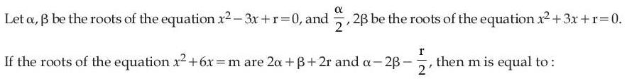
Hint 1: Use sum and product of roots for both equations. Notice the second pair (α/2, 2β) has the same product αβ as the first.
Hint 2: α + β = 3 and α/2 + 2β = −3. Solve for α and β, then r = αβ. For x2 + 6x − m = 0 the product of roots is −m.
What this tests: Relations between roots and coefficients of quadratics.
1. From the two sums: α + β = 3 and α/2 + 2β = −3. Solving: β = −3, α = 6, so r = αβ = −18.
2. Roots of the third equation: 2α + β + 2r = 12 − 3 − 36 = −27 and α − 2β − r/2 = 6 + 6 + 9 = 21.
3. Check: the sum is −6 ✓. Product = −27 × 21 = −567 = −m.
4. m = 567.
Answer: (4)
If this felt hard: A common slip is the sign at the end: the product of roots of x2 + 6x − m = 0 is −m, not m. Revise 'Quadratic Equations'.
Claude’s answer: 4 · NTA final key: 4 · agrees · Answer recomputed with SymPy (tools/verify_pyq_solutions.py)
Q2 · Mathematics · MCQ · ID 691121152
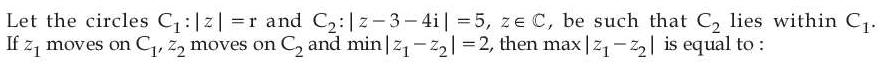
(3) 
(4) 
Hint 1: C2 has centre 3 + 4i and radius 5. How far is its centre from the origin, the centre of C1?
Hint 2: |3 + 4i| = 5. Since C2 lies inside C1, the minimum distance between the circles is r − (5 + 5), and the maximum is r + (5 + 5).
What this tests: Distances between points on two circles in the complex plane.
1. Centre of C2 is 5 away from O and its radius is 5, so its farthest point from O is 10 away.
2. Minimum |z1 − z2| = r − 10 = 2, so r = 12.
3. Maximum |z1 − z2| = r + 10 = 22.
Answer: (3)
If this felt hard: Draw the two circles on a line through both centres: the nearest and farthest points lie on that line. Revise 'Complex Numbers' (geometry of |z − z0| = r).
Claude’s answer: 3 · NTA final key: 3 · agrees · Answer recomputed with SymPy (tools/verify_pyq_solutions.py)
Q3 · Mathematics · MCQ · ID 691121153
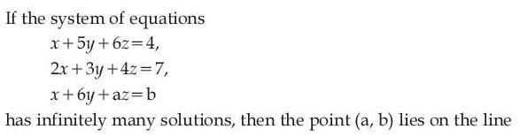
Hint 1: Infinitely many solutions needs the coefficient determinant to be zero AND the equations to be consistent.
Hint 2: det of [[1,5,6],[2,3,4],[1,6,a]] = 50 − 7a, so a = 50/7. Then pick b so that the third equation is a combination of the first two.
What this tests: Conditions for infinitely many solutions of a linear system.
1. det = 1(3a − 24) − 5(2a − 4) + 6(12 − 3) = 50 − 7a = 0, so a = 50/7.
2. For infinitely many solutions the determinant formed by replacing a column with the constants must also be 0. This gives b = 29/7.
3. a − b = 21/7 = 3, so (a, b) lies on x − y = 3.
Answer: (2)
If this felt hard: Remember both conditions: Δ = 0 and Δx = Δy = Δz = 0. Revise 'Matrices and Determinants'.
Claude’s answer: 2 · NTA final key: 2 · agrees · Answer recomputed with SymPy (tools/verify_pyq_solutions.py)
Q4 · Mathematics · MCQ · ID 691121154
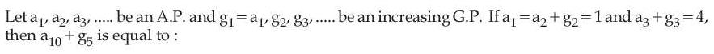
Hint 1: Let the AP have difference d and the GP have ratio r, both starting from 1.
Hint 2: a2 + g2 = 1 + d + r = 1 and a3 + g3 = 1 + 2d + r2 = 4. The GP is increasing, so choose r > 1.
What this tests: General terms of an AP and a GP.
1. From the first: d = −r. Then 1 − 2r + r2 = 4, so r2 − 2r − 3 = 0 and r = 3 (increasing GP), d = −3.
2. a10 = 1 + 9(−3) = −26 and g5 = 34 = 81.
3. a10 + g5 = 55.
Answer: (4)
If this felt hard: The word 'increasing' is what rules out r = −1. Underline such words. Revise 'Sequences and Series'.
Claude’s answer: 4 · NTA final key: 4 · agrees · Answer recomputed with SymPy (tools/verify_pyq_solutions.py)
Q5 · Mathematics · MCQ · ID 691121155
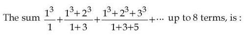
Hint 1: Simplify the n-th term first. What is 13 + … + n3, and what is 1 + 3 + … + (2n−1)?
Hint 2: Numerator = (n(n+1)/2)2, denominator = n2. So the n-th term is (n+1)2/4.
What this tests: Sum of cubes and of odd numbers; summing a simplified general term.
1. n-th term = [n(n+1)/2]2/n2 = (n+1)2/4.
2. Sum for n = 1 to 8 = (22 + 32 + … + 92)/4 = (285 − 1)/4 = 71.
Answer: (2)
If this felt hard: Revise the standard sums Σk3 = (n(n+1)/2)2 and 1 + 3 + … + (2n−1) = n2 ('Sequences and Series').
Claude’s answer: 2 · NTA final key: 2 · agrees · Answer recomputed with SymPy (tools/verify_pyq_solutions.py)
Q6 · Mathematics · MCQ · ID 691121156
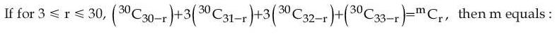
(2) 
(4) 
Hint 1: Use nCr = nCn−r to rewrite every term as 30C of something close to r.
Hint 2: The sum becomes 30Cr + 3·30Cr−1 + 3·30Cr−2 + 30Cr−3. The coefficients 1, 3, 3, 1 should remind you of something.
What this tests: Pascal's rule / Vandermonde-type sums of binomial coefficients.
1. 30C30−r = 30Cr, 30C31−r = 30Cr−1, and so on.
2. Sum = 30Cr + 3·30Cr−1 + 3·30Cr−2 + 30Cr−3.
3. Applying Pascal's rule three times, this equals 33Cr (like (1+x)3(1+x)30).
4. m = 33.
Answer: (3)
If this felt hard: Coefficients 1, 3, 3, 1 mean 'multiply by (1+x)3'. Revise 'Binomial Theorem' and Pascal's rule.
Claude’s answer: 3 · NTA final key: 3 · agrees · Answer recomputed with SymPy (tools/verify_pyq_solutions.py)
Q7 · Mathematics · MCQ · ID 691121157
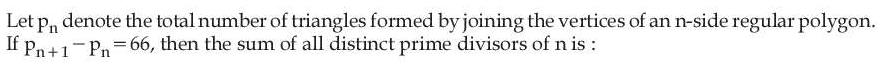
(2) 
(3) 
(4) 
Hint 1: The number of triangles from n vertices is nC3. What is n+1C3 − nC3?
Hint 2: n+1C3 − nC3 = nC2 = n(n−1)/2.
What this tests: Counting triangles from polygon vertices; Pascal's rule.
1. pn+1 − pn = nC2 = 66, so n(n − 1) = 132 and n = 12.
2. 12 = 22 × 3, so the distinct primes are 2 and 3.
3. Sum = 5.
Answer: (3)
If this felt hard: Revise 'Permutations and Combinations': n+1Cr − nCr = nCr−1.
Claude’s answer: 3 · NTA final key: 3 · agrees · Answer recomputed with SymPy (tools/verify_pyq_solutions.py)
Q8 · Mathematics · MCQ · ID 691121158
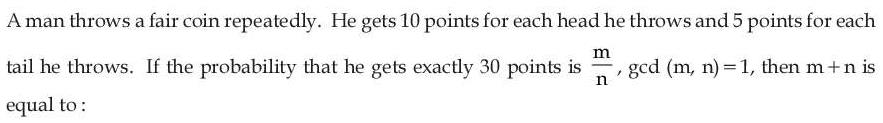
(2) 
Hint 1: Think in steps of 5 points. To land exactly on 30, the last throw comes from 25 (a tail) or from 20 (a head).
Hint 2: Let pk = probability of ever reaching 5k points. Then pk = ½pk−1 + ½pk−2, with p0 = 1 and p1 = ½.
What this tests: Probability with a recursion (reaching an exact total).
1. p0 = 1, p1 = 1/2.
2. p2 = 3/4, p3 = 5/8, p4 = 11/16, p5 = 21/32, p6 = 43/64.
3. 30 points means k = 6: probability 43/64, so m + n = 107.
Answer: (3)
If this felt hard: If the recursion idea was new, try small cases (exactly 10 points, exactly 15) to see the pattern. Revise 'Probability'.
Claude’s answer: 3 · NTA final key: 3 · agrees · Answer recomputed with SymPy (tools/verify_pyq_solutions.py)
Q9 · Mathematics · MCQ · ID 691121159
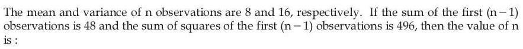
(1) 
(2) 
(3) 
(4) 
Hint 1: Write the last observation and its square using the totals: Σx = 8n and Σx2 = n(variance + mean2).
Hint 2: Last observation = 8n − 48. Σx2 = n(16 + 64) = 80n, so (last)2 = 80n − 496.
What this tests: Mean and variance relations (Σx2 = n(σ2 + x̄2)).
1. (8n − 48)2 = 80n − 496.
2. 64n2 − 848n + 2800 = 0, i.e. 4n2 − 53n + 175 = 0.
3. n = 7 or n = 25/4. n must be a whole number, so n = 7.
Answer: (4)
If this felt hard: Revise 'Statistics': σ2 = Σx2/n − x̄2. Rearranging it is the key step.
Claude’s answer: 4 · NTA final key: 4 · agrees · Answer recomputed with SymPy (tools/verify_pyq_solutions.py)
Q10 · Mathematics · MCQ · ID 691121160
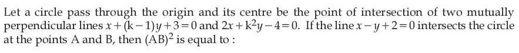
(1) 
(2) 
(3) 
(4) 
Hint 1: Perpendicular lines: the product of their slopes is −1. Use it to find k first.
Hint 2: Slopes −1/(k−1) and −2/k2: product = −1 gives k3 − k2 + 2 = 0, so k = −1. Then find the centre, the radius (the circle passes through O), and the chord on x − y + 2 = 0.
What this tests: Perpendicular lines and chord length of a circle.
1. k = −1 gives the lines x − 2y + 3 = 0 and 2x + y − 4 = 0, which meet at (1, 2) (the centre).
2. The circle passes through O, so r2 = 1 + 4 = 5.
3. Distance from (1, 2) to x − y + 2 = 0 is 1/√2.
4. (AB/2)2 = 5 − 1/2 = 9/2, so AB2 = 18.
Answer: (3)
If this felt hard: Revise 'Straight Lines' (slopes) and 'Conic Sections' (chord = 2√(r2 − d2)).
Claude’s answer: 3 · NTA final key: 3 · agrees · Answer recomputed with SymPy (tools/verify_pyq_solutions.py)
Q11 · Mathematics · MCQ · ID 691121161
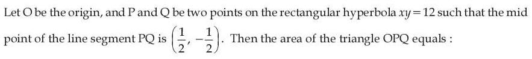
(1) 
(4) 
Hint 1: Write P = (x1, 12/x1) and Q = (x2, 12/x2) and use the midpoint.
Hint 2: x1 + x2 = 1 and 12(1/x1 + 1/x2) = −1, so x1x2 = −12. Area of OPQ = ½|x1y2 − x2y1|.
What this tests: Points on a rectangular hyperbola; area of a triangle with a vertex at the origin.
1. x1 + x2 = 1 and x1x2 = −12.
2. Area = ½|12x1/x2 − 12x2/x1| = 6|x12 − x22|/|x1x2| = ½|x1 − x2|·|x1 + x2|.
3. (x1 − x2)2 = 1 + 48 = 49, so area = ½ × 7 × 1 = 7/2.
Answer: (3)
If this felt hard: Revise 'Conic Sections' (parametric points on xy = c2) and the area formula ½|x1y2 − x2y1|.
Claude’s answer: 3 · NTA final key: 3 · agrees · Answer recomputed with SymPy (tools/verify_pyq_solutions.py)
Q12 · Mathematics · MCQ · ID 691121162
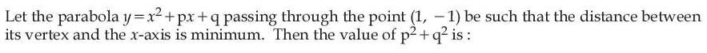
(1) 
(2) 
(3) 
(4) 
Hint 1: The point (1, −1) gives one equation between p and q. Then write the vertex's y-coordinate in terms of p alone.
Hint 2: q = −2 − p. Vertex y = q − p2/4 = −[(p/2 + 1)2 + 1]. Its distance from the x-axis is smallest when p/2 + 1 = 0.
What this tests: Vertex of a parabola and minimising by completing the square.
1. 1 + p + q = −1, so q = −2 − p.
2. Vertex y = −(p2/4 + p + 2) = −[(p/2 + 1)2 + 1], so |y| is smallest (= 1) at p = −2.
3. Then q = 0, so p2 + q2 = 4.
Answer: (2)
If this felt hard: Revise 'Quadratic Equations': the vertex is at (−b/2a, −D/4a). Completing the square is the quick route.
Claude’s answer: 2 · NTA final key: 2 · agrees · Answer recomputed with SymPy (tools/verify_pyq_solutions.py)
Q13 · Mathematics · MCQ · ID 691121163
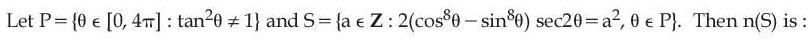
(1) 
(2) 
(3) 
(4) 
Hint 1: Factor cos8θ − sin8θ as a difference of squares, twice.
Hint 2: cos8 − sin8 = cos 2θ (1 − ½ sin2 2θ). So the left side is 2 − sin2 2θ. What values can it take when tan2θ ≠ 1?
What this tests: Trig identities and range, with an excluded case.
1. cos8θ − sin8θ = (cos2 − sin2)(cos2 + sin2)(cos4 + sin4) = cos 2θ(1 − ½ sin2 2θ).
2. Multiply by 2 sec 2θ: 2 − sin2 2θ.
3. tan2θ ≠ 1 means cos 2θ ≠ 0, so sin2 2θ ≠ 1. The value lies in (1, 2].
4. a2 must lie in (1, 2]: no integer works. n(S) = 0.
Answer: (1)
If this felt hard: The trap is allowing a = ±1. That would need sin2 2θ = 1, which the condition tan2θ ≠ 1 rules out. Revise 'Trigonometric Functions'.
Claude’s answer: 1 · NTA final key: 1 · agrees · Answer recomputed with SymPy (tools/verify_pyq_solutions.py)
Q14 · Mathematics · MCQ · ID 691121164
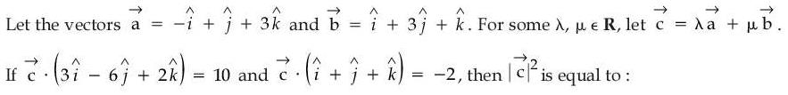
(1) 
(2) 
Hint 1: Write c = λa + μb in components, then turn the two dot-product conditions into two equations in λ and μ.
Hint 2: c = (μ − λ, λ + 3μ, 3λ + μ). c·(1,1,1) = 3λ + 5μ = −2 and c·(3,−6,2) = −3λ − 13μ = 10.
What this tests: Linear combinations of vectors and dot products.
1. Adding the two equations: −8μ = 8, so μ = −1, and then λ = 1.
2. c = (−2, −2, 2).
3. |c|2 = 4 + 4 + 4 = 12.
Answer: (2)
If this felt hard: Revise 'Vector Algebra'. Writing c in components first keeps it simple.
Claude’s answer: 2 · NTA final key: 2 · agrees · Answer recomputed with SymPy (tools/verify_pyq_solutions.py)
Q15 · Mathematics · MCQ · ID 691121165
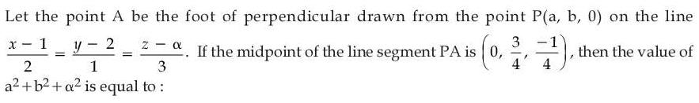
(1) 
(2) 
(3) 
(4) 
Hint 1: If M is the midpoint of PA, then A = 2M − P. A must also lie on the line, and PA must be perpendicular to it.
Hint 2: A = (−a, 3/2 − b, −1/2). Set A = (1 + 2t, 2 + t, α + 3t) and use (A − P)·(2, 1, 3) = 0.
What this tests: Foot of the perpendicular from a point to a line in 3D.
1. A = 2M − P = (−a, 3/2 − b, −1/2).
2. Perpendicular: (−2a)(2) + (3/2 − 2b)(1) + (−1/2)(3) = 0, so b = −2a.
3. On the line: −a = 1 + 2t and 3/2 − b = 2 + t, which give b = a/2. Together with b = −2a: a = b = 0, t = −1/2.
4. z: −1/2 = α + 3t, so α = 1.
5. a2 + b2 + α2 = 1.
Answer: (1)
If this felt hard: Revise 'Three Dimensional Geometry'. The midpoint trick A = 2M − P saves a lot of algebra.
Claude’s answer: 1 · NTA final key: 1 · agrees · Answer recomputed with SymPy (tools/verify_pyq_solutions.py)
Q16 · Mathematics · MCQ · ID 691121166
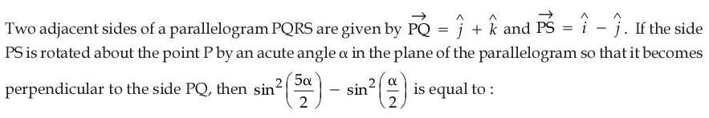
(1) 
Hint 1: Find the angle between PQ and PS using the dot product.
Hint 2: cos θ = PQ·PS/(|PQ||PS|) = −1/2, so θ = 120°. Turning PS until it is perpendicular to PQ means α = 30°.
What this tests: Angle between vectors; the identity sin2A − sin2B = sin(A+B)sin(A−B).
1. PQ·PS = 0 − 1 + 0 = −1, |PQ| = |PS| = √2, so cos θ = −1/2 and θ = 120°.
2. It must become 90°, so α = 30°.
3. sin275° − sin215° = sin(75° + 15°)·sin(75° − 15°) = sin 90° sin 60° = √3/2.
Answer: (2)
If this felt hard: Revise 'Vector Algebra' (dot product) and the sin2A − sin2B identity ('Trigonometric Functions').
Claude’s answer: 2 · NTA final key: 2 · agrees · Answer recomputed with SymPy (tools/verify_pyq_solutions.py)
Q17 · Mathematics · MCQ · ID 691121167
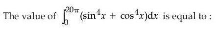
(3)
(4)
Hint 1: Rewrite sin4x + cos4x using (sin2 + cos2)2.
Hint 2: sin4x + cos4x = 1 − ½ sin22x = 3/4 + (1/4)cos 4x. The cosine part integrates to 0 over whole periods.
What this tests: Definite integrals using power reduction and periodicity.
1. sin4 + cos4 = 1 − 2sin2cos2 = 1 − ½sin22x = 3/4 + ¼cos 4x.
2. ∫ from 0 to 20π of ¼cos 4x dx = 0 (whole periods).
3. ∫ from 0 to 20π of 3/4 dx = 15π.
Answer: (3)
If this felt hard: Revise 'Definite Integrals' (periodic functions) and the power-reduction identities.
Claude’s answer: 3 · NTA final key: 3 · agrees · Answer recomputed with SymPy (tools/verify_pyq_solutions.py)
Q18 · Mathematics · MCQ · ID 691121168
(1) 
(2)
(3)
(4)
Hint 1: If f(x)/x3 → −5 as x → 0, what does f look like near 0? It has degree 5.
Hint 2: f(x) = −5x3 + ax4 + bx5. Use f′(1) = 0 and f′(−1) = 0.
What this tests: Building a polynomial from a limit condition and extrema.
1. f′(x) = −15x2 + 4ax3 + 5bx4.
2. f′(1) = −15 + 4a + 5b = 0 and f′(−1) = −15 − 4a + 5b = 0, so a = 0 and b = 3.
3. f(x) = 3x5 − 5x3: f(2) = 96 − 40 = 56 and f(−2) = −56.
4. f(2) − f(−2) = 112.
Answer: (4)
If this felt hard: The key idea: the limit tells you the lowest-degree term. Revise 'Limits' and 'Application of Derivatives' (extrema).
Claude’s answer: 4 · NTA final key: 4 · agrees · Answer recomputed with SymPy (tools/verify_pyq_solutions.py)
Q19 · Mathematics · MCQ · ID 691121169
(1) 
(2)
(3)
(4)
Hint 1: Factor the denominator and use partial fractions.
Hint 2: x2 + 2x − 15 = (x + 5)(x − 3). (16x + 24)/((x+5)(x−3)) = 7/(x+5) + 9/(x−3).
What this tests: Integration by partial fractions; log laws.
1. f(x) = 7 ln|x + 5| + 9 ln|x − 3| + C.
2. f(4) = 7 ln 9 + 0 + C = 14 ln 3, so C = 0.
3. f(7) = 7 ln 12 + 9 ln 4 = 7(2 ln 2 + ln 3) + 18 ln 2 = 32 ln 2 + 7 ln 3.
4. α = 32, β = 7, so α + β = 39.
Answer: (3)
If this felt hard: Revise 'Integrals' (partial fractions) and log rules: ln 12 = 2 ln 2 + ln 3.
Claude’s answer: 3 · NTA final key: 3 · agrees · Answer recomputed with SymPy (tools/verify_pyq_solutions.py)
Q20 · Mathematics · MCQ · ID 691121170
(1)
(2)
(3)
(4)
Hint 1: Here x is a function of y. Rearrange to get dx/dy. Is it homogeneous?
Hint 2: dx/dy = (2xy − x2)/(2y2). Put x = vy: v + y dv/dy = v − v2/2.
What this tests: Homogeneous differential equations (with x as the dependent variable).
1. y dv/dy = −v2/2, so dv/v2 = −dy/(2y).
2. Integrating: 1/v = ½ ln y + C. At y = e, x = e means v = 1: 1 = ½ + C, so C = ½.
3. At y = e2: 1/v = 1 + ½ = 3/2, so v = 2/3 and x = (2/3)e2.
Answer: (2)
If this felt hard: When the equation is in dx/dy, treat y as the independent variable. Revise 'Differential Equations': homogeneous equations.
Claude’s answer: 2 · NTA final key: 2 · agrees · Answer recomputed with SymPy (tools/verify_pyq_solutions.py)
Q21 · Mathematics · Numerical · ID 691121171
Hint 1: The two conditions are independent: x divides z, and y ≤ w. Count each separately and multiply.
Hint 2: Count pairs (x, z) from A with x | z, and pairs (y, w) with y ≤ w.
What this tests: Counting elements of a relation.
1. x | z: x = 2 → z = 2, 4, 6 (3); x = 3 → 3, 6 (2); x = 4, 5, 6 → 1 each. Total 8.
2. y ≤ w: 5 equal pairs + C(5, 2) = 10 unequal = 15.
3. Total = 8 × 15 = 120.
Answer: 120
If this felt hard: Revise 'Relations and Functions'. Splitting into independent conditions is the key step.
Claude’s answer: 120 · NTA final key: 120 · agrees · Answer recomputed with SymPy (tools/verify_pyq_solutions.py)
Q22 · Mathematics · Numerical · ID 691121172
Hint 1: P = BA−1 and Q = A−1B. Is there a reason their traces are equal?
Hint 2: trace(XY) = trace(YX), so trace(P) = trace(Q). Compute A−1B and its trace.
What this tests: Matrix inverse and the property trace(XY) = trace(YX).
1. det A = −4 + 8 = 4, A−1 = ¼[[−2, 2], [−4, 2]].
2. A−1B = ¼[[−4, −12], [−10, −30]], trace = −34/4 = −17/2.
3. trace(2(P + Q)) = 2(−17/2 − 17/2) = −34. Absolute value: 34.
Answer: 34
If this felt hard: Revise 'Matrices': the inverse of a 2×2 matrix. Knowing trace(XY) = trace(YX) halves the work.
Claude’s answer: 34 · NTA final key: 34 · agrees · Answer recomputed with SymPy (tools/verify_pyq_solutions.py)
Q23 · Mathematics · Numerical · ID 691121173
Hint 1: Let B = (x, y) and M be the midpoint of AB. Internal touching means |OM| = 6 − |AB|/2.
Hint 2: 2|OM| = |B − (−3, 0)| (since 2M = A + B). So |BA′| + |BA| = 12, where A′ = (−3, 0). That is an ellipse.
What this tests: Locus as an ellipse (sum of focal distances constant).
1. Touching internally: |OM| = 6 − |AB|/2.
2. 2|OM| = |A + B| = distance from B to (−3, 0). So dist(B, (−3,0)) + dist(B, (3,0)) = 12.
3. Ellipse with foci (±3, 0) and 2a = 12: a = 6, c = 3, e = 1/2.
4. 72e2 = 18.
Answer: 18
If this felt hard: Revise 'Conic Sections': an ellipse is where the sum of the distances to two foci is constant. Spotting it here takes practice.
Claude’s answer: 18 · NTA final key: 18 · agrees · Answer recomputed with SymPy (tools/verify_pyq_solutions.py)
Q24 · Mathematics · Numerical · ID 691121174
Hint 1: Find where the line meets the hyperbola, then decide which curve is on top between those points.
Hint 2: x2/9 − y2/16 = 1 and y = (8x − 24)/3 meet at x = 3 and x = 5. Area = ∫ from 3 to 5 of [(4/3)√(x2 − 9) − (8x − 24)/3] dx.
What this tests: Area between a hyperbola and a line; ∫√(x2 − a2) dx.
1. Intersections: x2 − 8x + 15 = 0, so x = 3, 5.
2. ∫ from 3 to 5 of √(x2 − 9) dx = [x√(x2−9)/2 − (9/2)ln(x + √(x2−9))] = 10 − (9/2)ln 3.
3. Hyperbola part: (4/3)(10 − (9/2)ln 3) = 40/3 − 6 ln 3. Line part: 16/3.
4. A = 8 − 6 ln 3, so 3(A + 6 ln 3) = 24.
Answer: 24
If this felt hard: Revise 'Application of Integrals' and the standard integral ∫√(x2 − a2) dx.
Claude’s answer: 24 · NTA final key: 24 · agrees · Answer recomputed with SymPy (tools/verify_pyq_solutions.py)
Q25 · Mathematics · Numerical · ID 691121175
Hint 1: [g(x)] jumps wherever g(x) passes through an integer. What range does g take on [2, 4]?
Hint 2: g(x) = x2 − x − ½ is increasing on [2, 4], from 1.5 to 11.5. Count the integers it crosses.
What this tests: Discontinuities of the greatest integer function of a continuous function.
1. g(2) = 1.5 and g(4) = 11.5, and g is increasing on [2, 4].
2. g passes through 2, 3, …, 11: 10 integers, each at an interior point.
3. So [g] is discontinuous at 10 points.
Answer: 10
If this felt hard: Revise 'Continuity and Differentiability'. Check whether the endpoints give integer values (here they don't).
Claude’s answer: 10 · NTA final key: 10 · agrees · Answer recomputed with SymPy (tools/verify_pyq_solutions.py)
Q26 · Physics · MCQ · ID 691121176
(1)
(2)
(3)
(4)
Hint 1: Write the dimensions of G and of h first.
Hint 2: [G] = M−1L3T−2 and [h] = ML2T−1. Test each option.
What this tests: Dimensional analysis with a new set of base quantities.
1. [G] = M−1L3T−2.
2. Option 2: h T−1 L M−2 = (ML2T−1)(T−1)(L)(M−2) = M−1L3T−2 ✓.
3. The others don't match (for example, option 1 gives M−1L3T0).
Answer: (2)
If this felt hard: Revise 'Units and Measurements'. Testing options is fastest when the options are given.
Claude’s answer: 2 · NTA final key: 2 · agrees · Theory question: not computable, needs a teacher’s review
Q27 · Physics · MCQ · ID 691121177
(1)
(2)
(3)
(4)
Hint 1: Which force pushes the mass towards the axis, and which force holds it up?
Hint 2: The wall's normal force gives the centripetal force: N = mω2r. Friction μN must balance mg.
What this tests: Circular motion with friction (rotor).
1. N = mω2r.
2. μmω2r = mg, so μ = g/(ω2r) = 10/(25 × 4) = 0.1.
Answer: (1)
If this felt hard: Revise 'Laws of Motion' (circular motion). Mass cancels, so 0.5 kg is not needed.
Claude’s answer: 1 · NTA final key: 1 · agrees · Answer recomputed by script (tools/verify_pyq_solutions.py)
Q28 · Physics · MCQ · ID 691121178
(1)
(2)
(3)
(4)
Hint 1: First find the acceleration of the blocks (Atwood machine). Then how does the centre of mass move?
Hint 2: a = (m1 − m2)g/(m1 + m2) = 10/3 m/s2. Each block moves ½at2 in 2 s; the COM moves (m1s − m2s)/(m1 + m2).
What this tests: Atwood machine and centre of mass motion.
1. a = 10/3 m/s2; in 2 s each block moves s = ½ × (10/3) × 4 = 20/3 m (2 kg down, 1 kg up).
2. COM displacement = (2 × 20/3 − 1 × 20/3)/3 = 20/9 ≈ 2.22 m (downward).
Answer: (3)
If this felt hard: The trap 3.33 comes from giving a block's distance (6.67) or other mix-ups. Revise 'System of Particles': COM displacement.
Claude’s answer: 3 · NTA final key: 3 · agrees · Answer recomputed by script (tools/verify_pyq_solutions.py)
Q29 · Physics · MCQ · ID 691121179
(1)
(2)
(3)
(4)
Hint 1: Total force = q(E + v × B). Subtract the electric part first.
Hint 2: qE = 4 × 10−10 ĵ. So q(v × B) = (4î − 2ĵ) × 10−10. With v = (vx, vy, 0) and B = 4×10−3 k̂: v × B = 4×10−3(vy, −vx, 0).
What this tests: Lorentz force with both E and B.
1. qE = 10−9 × 0.4 ĵ = 4 × 10−10 ĵ.
2. Magnetic part = (4î − 2ĵ) × 10−10, so v × B = 0.4î − 0.2ĵ.
3. 4×10−3vy = 0.4 gives vy = 100; −4×10−3vx = −0.2 gives vx = 50.
Answer: (1), v = 50î + 100ĵ m/s
If this felt hard: Signs in the cross product decide between options 1 and 4. Revise 'Moving Charges and Magnetism'.
Claude’s answer: 1 · NTA final key: 1 · agrees · Answer recomputed by script (tools/verify_pyq_solutions.py)
Q30 · Physics · MCQ · ID 691121180
(1)
(2)
(3)
(4)
Hint 1: A NAND gate with both inputs joined acts as a NOT gate. Find what each stage does.
Hint 2: The first two NANDs give X̄ and Ȳ. The middle NAND gives (X̄·Ȳ)′ = X + Y. The last NAND (as NOT) inverts it.
What this tests: Logic gates and De Morgan's laws.
1. Inputs: X̄ and Ȳ (NANDs used as NOT).
2. Middle NAND: (X̄Ȳ)′ = X + Y (De Morgan).
3. Last NAND as NOT: (X + Y)′, which is NOR.
Answer: (4)
If this felt hard: Revise 'Semiconductor Electronics': NAND as a universal gate.
Claude’s answer: 4 · NTA final key: 4 · agrees · Theory question: not computable, needs a teacher’s review
Q31 · Physics · MCQ · ID 691121181
(1)
(2)
(3)
(4)
Hint 1: Falling from infinity, gravitational PE turns into KE. What is the PE at the surface?
Hint 2: ½mv2 = GMm/R = mgR, so v = √(2gR) and K = mgR.
What this tests: Energy conservation in gravitation (escape speed).
1. v = √(2gR) = √(2 × 9.8 × 6.4×106) ≈ 11.2 km/s.
2. K = mgR = 1 × 9.8 × 6.4×106 ≈ 6.27 × 107 J.
Answer: (1)
If this felt hard: The trap 12.54 × 107 J comes from using 2mgR. Revise 'Gravitation': escape velocity.
Claude’s answer: 1 · NTA final key: 1 · agrees · Answer recomputed by script (tools/verify_pyq_solutions.py)
Q32 · Physics · MCQ · ID 691121182
(1)
(2)
(3)
(4)
Hint 1: First find the least count and the zero error. Is the zero error positive or negative here?
Hint 2: LC = 0.1 mm/100 = 0.001 mm. Zero of the main scale matches the 5th circular division: zero error = +5 × LC.
What this tests: Screw gauge reading with zero error.
1. LC = 0.001 mm; zero error = +0.005 mm.
2. Observed reading = 5 + 50 × 0.001 = 5.050 mm.
3. Correct reading = observed − zero error = 5.045 mm.
Answer: (1)
If this felt hard: The trap 5.055 comes from adding the zero error instead of subtracting it. Revise 'Units and Measurements': screw gauge.
Claude’s answer: 1 · NTA final key: 1 · agrees · Answer recomputed by script (tools/verify_pyq_solutions.py)
Q33 · Physics · MCQ · ID 691121183
(1)
(2)
(3)
(4)
Hint 1: A soap bubble has two surfaces. Work = surface tension × increase in total area.
Hint 2: W = T × 2 × 4π(r22 − r12) with r1 = 1 cm and r2 = 3 cm.
What this tests: Surface energy of a soap bubble.
1. W = 0.03 × 8π × (9 − 1) × 10−4 = 1.92π × 10−4 J.
2. α = 1.92.
Answer: (3)
If this felt hard: Common slips: using diameters as radii, or forgetting the second surface (0.96). Revise 'Mechanical Properties of Fluids'.
Claude’s answer: 3 · NTA final key: 3 · agrees · Answer recomputed by script (tools/verify_pyq_solutions.py)
Q34 · Physics · MCQ · ID 691121184
(1)
(2)
(3)
(4)
Hint 1: Find the total moles from PV = nRT, then use the total mass.
Hint 2: n = PV/RT = 1/3 mol. Then 44x + 32y = 13.2 with x + y = 1/3.
What this tests: Ideal gas mixtures.
1. n = (105 × 8.31×10−3)/(8.31 × 300) = 1/3 mol.
2. 44x + 32(1/3 − x) = 13.2, so 12x = 2.53 and x ≈ 0.21 (CO2); y ≈ 0.12 (O2).
Answer: (3)
If this felt hard: Watch units: cm3 to m3 (8310 cm3 = 8.31 × 10−3 m3). Revise 'Kinetic Theory of Gases'.
Claude’s answer: 3 · NTA final key: 3 · agrees · Answer recomputed by script (tools/verify_pyq_solutions.py)
Q35 · Physics · MCQ · ID 691121185
(1)
(2)
(3)
(4)
Hint 1: At steady speed the forces balance. The air in the bubble is almost weightless.
Hint 2: Buoyancy = viscous drag: (4/3)πr3ρg = 6πηrv, so η = 2r2ρg/(9v).
What this tests: Terminal velocity and Stokes' law.
1. η = 2 × (10−3)2 × 2000 × 10/(9 × 0.005) ≈ 0.889 Pa·s.
2. 1 Pa·s = 10 poise, so η ≈ 8.8 poise.
Answer: (2)
If this felt hard: The unit change (Pa·s to poise) is where 0.88 comes from. Revise 'Mechanical Properties of Fluids'.
Claude’s answer: 2 · NTA final key: 2 · agrees · Answer recomputed by script (tools/verify_pyq_solutions.py)
Q36 · Physics · MCQ · ID 691121186
(1)
(2)
(3)
(4) 
Hint 1: Use work–energy over the whole motion: falling 10 m plus going 10 cm into the sand.
Hint 2: mg(h + d) = F × d.
What this tests: Work–energy theorem with a resistive force.
1. mg(h + d) = 2 × 10 × 10.1 = 202 J.
2. F = 202/0.1 = 2020 N.
Answer: (2)
If this felt hard: The trap 2000 N comes from ignoring the extra 10 cm of fall inside the sand. Revise 'Work, Energy and Power'.
Claude’s answer: 2 · NTA final key: 2 · agrees · Answer recomputed by script (tools/verify_pyq_solutions.py)
Q37 · Physics · MCQ · ID 691121187
(1)
(2)
(3)
(4)
Hint 1: In an EM wave, E × B points along the direction of travel. The wave goes along +x and B is along +ĵ.
Hint 2: |E| = cB. Which direction of E (±k̂) makes E × B point along +î?
What this tests: Relation between E, B and propagation direction in EM waves.
1. |E| = cB = 3×108 × 2×10−7 = 60 V/m.
2. (−k̂) × ĵ = î, so E must be along −k̂.
3. E = −60 k̂ V/m.
Answer: (2)
If this felt hard: Revise 'Electromagnetic Waves'. The cross-product direction picks between +60 and −60.
Claude’s answer: 2 · NTA final key: 2 · agrees · Theory question: not computable, needs a teacher’s review
Q38 · Physics · MCQ · ID 691121188
(1)
(2) 
(3)
(4)
Hint 1: Find the bulb's resistance from its rating. It sits in parallel with the 400 Ω resistor.
Hint 2: Rbulb = V2/P = 400 Ω. 400 ∥ 400 = 200 Ω, in series with 200 Ω.
What this tests: Series–parallel circuits with a rated bulb.
1. Bulb: 2002/100 = 400 Ω.
2. Parallel combination = 200 Ω; total = 400 Ω; I = 0.25 A.
3. Voltage across the parallel part = 0.25 × 200 = 50 V.
Answer: (2)
If this felt hard: The trap 66.6 V ignores the bulb's own resistance. Revise 'Current Electricity'.
Claude’s answer: 2 · NTA final key: 2 · agrees · Answer recomputed by script (tools/verify_pyq_solutions.py)
Q39 · Physics · MCQ · ID 691121189
(1)
(2)
(3)
(4)
Hint 1: The droplet floats when the electric force upward equals its weight. Which plate must be at the higher potential?
Hint 2: mg = qE with m = ρ(4/3)πr3. V = E × d. The field must point up (positive charge), so the lower plate B is at the higher potential.
What this tests: Charged drop in a uniform electric field (Millikan-type).
1. m = 1500 × (4/3)π × 10−9 ≈ 6.28 × 10−6 kg.
2. E = mg/q ≈ 6.28×10−5/(5×10−9) ≈ 1.26 × 104 V/m.
3. V = E × (12/π) × 10−2 ≈ 480 V, with B higher than A.
4. Only option 1 (VA = 100 V, VB = 580 V) has VB − VA = 480 V.
Answer: (1)
If this felt hard: The trap '580 V and 100 V' has the right difference but the wrong direction. Revise 'Electric Charges and Fields' and 'Electrostatic Potential'.
Claude’s answer: 1 · NTA final key: 1 · agrees · Answer recomputed by script (tools/verify_pyq_solutions.py)
Q40 · Physics · MCQ · ID 691121190
(1)
(2)
(3)
(4)
Hint 1: Gauss's law: flux depends only on the charge inside each sphere.
Hint 2: The 3 cm sphere contains only 8 μC. The 5 cm sphere contains 8 − 2 = 6 μC.
What this tests: Gauss's law (enclosed charge).
1. Flux ∝ enclosed charge.
2. Ratio = 8 : 6 = 4 : 3.
Answer: (3)
If this felt hard: Revise 'Electric Charges and Fields': Gauss's law. Charges outside a surface add no net flux.
Claude’s answer: 3 · NTA final key: 3 · agrees · Answer recomputed by script (tools/verify_pyq_solutions.py)
Q41 · Physics · MCQ · ID 691121191
(1)
(2) 
(3)
(4)
Hint 1: The ray enters the first face normally. Find its angle of incidence on the painted base.
Hint 2: Inside, the ray meets the base at 60° to the normal. TIR needs sin 60° ≥ n2/1.6.
What this tests: Total internal reflection at an interface between two media.
1. Angle of incidence on the base = 60°.
2. TIR at the prism–paint boundary: 1.6 sin 60° ≥ n2, so n2 ≤ 1.6 × √3/2 = 4√3/5.
3. The limiting value is 4√3/5.
Answer: (4)
If this felt hard: Revise 'Ray Optics': the critical angle between two media is sin C = n2/n1.
Claude’s answer: 4 · NTA final key: 4 · agrees · Answer recomputed by script (tools/verify_pyq_solutions.py)
Note: The question says 'minimum value of n_{2}'; physically 4√3/5 is the largest n_{2} that still gives TIR. NTA's key is option 4.
Q42 · Physics · MCQ · ID 691121192
(1)
(2)
(3) 
(4) 
Hint 1: Work out which inductor is shorted when S1 is closed and which when S2 is closed.
Hint 2: S1 closed shorts L2, leaving L1: tan 30° = (ωL1 − XC)/R. S2 closed shorts L1, leaving L2: tan 60° = (ωL2 − XC)/R. Divide to remove R.
What this tests: Phase angle in a series LCR circuit.
1. XC = 1/(300 × 10−4) = 100/3 Ω.
2. Dividing: 3 = (ωL2 − XC)/(ωL1 − XC), so 3ωL1 − ωL2 = 2XC.
3. 3L1 − L2 = 2XC/ω = (200/3)/300 = 2/9 H.
Answer: (2)
If this felt hard: Revise 'Alternating Current': tan φ = (XL − XC)/R. Dividing the two equations removes the unknown R.
Claude’s answer: 2 · NTA final key: 2 · agrees · Answer recomputed by script (tools/verify_pyq_solutions.py)
Q43 · Physics · MCQ · ID 691121193
(1)
(2)
(3)
(4)
Hint 1: Mutual inductance is the same either way. Which is easier: the field of the small circle at the square, or the field of the square at the small circle?
Hint 2: Use the square's field at its centre (almost uniform over the small circle): B = 2√2μ0I/(πL). Flux = B × πR2.
What this tests: Mutual inductance using the simpler field.
1. Each side of the square at distance L/2: B = μ0I/(4π(L/2)) × 2 sin 45°. For four sides: B = 2√2 μ0I/(πL).
2. Flux through the circle = B × πR2 = 2√2 μ0IR2/L.
3. M = 2√2 μ0R2/L.
Answer: (4)
If this felt hard: Revise 'Electromagnetic Induction' (M12 = M21) and the field of a finite straight wire.
Claude’s answer: 4 · NTA final key: 4 · agrees · Theory question: not computable, needs a teacher’s review
Q44 · Physics · MCQ · ID 691121194
(1)
(2)
(3)
(4)
Hint 1: Mass defect = (mass of protons + neutrons) − nucleus mass. Bi has 83 protons and 126 neutrons.
Hint 2: Δm = 83(1.007825) + 126(1.008665) − 208.980388. Multiply by 931 MeV and divide by 209.
What this tests: Binding energy per nucleon.
1. Δm = 83.649475 + 127.091790 − 208.980388 = 1.760877 u.
2. BE = 1.760877 × 931 ≈ 1639.4 MeV.
3. Per nucleon: 1639.4/209 ≈ 7.84 MeV.
Answer: (2)
If this felt hard: The trap 7.48 is a digit swap; 8.79 comes from dividing by 83 + 103. Revise 'Nuclei'.
Claude’s answer: 2 · NTA final key: 2 · agrees · Answer recomputed by script (tools/verify_pyq_solutions.py)
Q45 · Physics · MCQ · ID 691121195
(1)
(2)
(3)
(4)
Hint 1: Velocity is zero at the extreme position; acceleration is zero at the mean position.
Hint 2: v ∝ cos(50t + π/3) = 0 first when 50t + π/3 = π/2. a ∝ sin(50t + π/3) = 0 next when 50t + π/3 = π.
What this tests: SHM: velocity and acceleration from the phase.
1. 50t1 = π/2 − π/3 = π/6, so t1 = π/300 s.
2. 50t2 = π − π/3 = 2π/3, so t2 = π/75 s.
Answer: (1)
If this felt hard: Revise 'Oscillations'. The phase at t = 0 is π/3, so start counting from there.
Claude’s answer: 1 · NTA final key: 1 · agrees · Answer recomputed by script (tools/verify_pyq_solutions.py)
Q46 · Physics · Numerical · ID 691121196
Hint 1: In YDSE, I = Imaxcos2(φ/2).
Hint 2: cos2(φ/2) = 3/4 gives φ = π/3. Path difference = (λ/2π) × φ.
What this tests: Intensity in Young's double slit experiment.
1. cos(φ/2) = √3/2, so φ/2 = π/6 and φ = π/3.
2. Path difference = λ/6, so x = 6.
Answer: 6
If this felt hard: Revise 'Wave Optics': I = Imaxcos2(φ/2), and phase difference = (2π/λ) × path difference.
Claude’s answer: 6 · NTA final key: 6 · agrees · Answer recomputed by script (tools/verify_pyq_solutions.py)
Q47 · Physics · Numerical · ID 691121197
Hint 1: The electron's orbit is a current loop. How do r and v depend on n?
Hint 2: B at the centre = μ0I/(2r), with I = ev/(2πr). In Bohr's model r ∝ n2 and v ∝ 1/n.
What this tests: Magnetic field of an orbiting electron in the Bohr model.
1. B ∝ I/r ∝ v/r2 ∝ (1/n)/n4 = 1/n5.
2. B2/B4 = (4/2)5 = 32.
Answer: 32
If this felt hard: Revise 'Atoms': rn ∝ n2, vn ∝ 1/n. Then build B step by step.
Claude’s answer: 32 · NTA final key: 32 · agrees · Answer recomputed by script (tools/verify_pyq_solutions.py)
Q48 · Physics · Numerical · ID 691121198
Hint 1: At constant volume, ΔU = nCvΔT. Find Cv from Cp − Cv = R, in calories.
Hint 2: R = 8.36 J/mol°C = 2 cal/mol°C (1 cal = 4.18 J). So Cv = 8 − 2 = 6 cal/mol°C.
What this tests: Specific heats of gases and the first law.
1. Cv = 6 cal/mol°C.
2. ΔU = 5 × 6 × 10 = 300 cal.
Answer: 300
If this felt hard: The unit change of R to calories is the key step. Revise 'Thermodynamics'.
Claude’s answer: 300 · NTA final key: 300 · agrees · Answer recomputed by script (tools/verify_pyq_solutions.py)
Q49 · Physics · Numerical · ID 691121199
Hint 1: The paper burns fastest when it is at the focus. So what is the focal length?
Hint 2: f = 30 cm. For a lens with both surfaces of radius 60 cm, 1/f = (μ − 1)(2/R).
What this tests: Lens maker's formula.
1. f = 30 cm.
2. 1/30 = (μ − 1)(2/60) = (μ − 1)/30, so μ = 2.
3. α/10 = 2, so α = 20.
Answer: 20
If this felt hard: Revise 'Ray Optics': lens maker's formula 1/f = (μ − 1)(1/R1 − 1/R2).
Claude’s answer: 20 · NTA final key: 20 · agrees · Answer recomputed by script (tools/verify_pyq_solutions.py)
Note: Assumes an equi-biconvex lens (both radii 60 cm), the only reading that matches NTA's key.
Q50 · Physics · Numerical · ID 691121200
Hint 1: The rod rotates about an axis through one end. The sphere rotates about its own diameter (the axis parallel to AB).
Hint 2: Irod = ML2/3 = 120 kg m2. Isphere = (2/5)mR2 = 4R2.
What this tests: Moment of inertia of a rod and a sphere.
1. Rod about its end: 40 × 9/3 = 120 kg m2.
2. Sphere about its own axis: (2/5) × 10 × R2 = 4R2.
3. 4R2 = 120, so R2 = 30 = α/2 and α = 60.
Answer: 60
If this felt hard: Revise 'System of Particles and Rotational Motion': standard moments of inertia.
Claude’s answer: 60 · NTA final key: 60 · agrees · Answer recomputed by script (tools/verify_pyq_solutions.py)
Note: Read with the sphere rotating about its own diameter (the axis shown through its centre), which matches NTA's key.
Q51 · Chemistry · MCQ · ID 691121201
(1)
(2)
(3)
(4)
Hint 1: From the mass ratio C : H = 12 : 1, what is the atom ratio? With two carbons, which hydrocarbon is it?
Hint 2: Atom ratio 1 : 1, so with 2 carbons it is C2H2 (M = 26). Each mole gives 2 mol CO2.
What this tests: Empirical formula and combustion stoichiometry.
1. Moles of C2H2 = 3.38/26 = 0.13.
2. CO2 formed = 0.26 mol = 0.26 × 44 = 11.44 g.
Answer: (2)
If this felt hard: Revise 'Some Basic Concepts of Chemistry'. Converting mass ratio to mole ratio is the first step.
Claude’s answer: 2 · NTA final key: 2 · agrees · Answer recomputed by script (tools/verify_pyq_solutions.py)
Q52 · Chemistry · MCQ · ID 691121202
(1)
(2)
(3)
(4)
Hint 1: With 0.1 M HCl present, [H+] is fixed at 0.1 M. The weak acid barely ionises.
Hint 2: Ka1 = [H+][HA−]/[H2A], so [HA−] = Ka1[H2A]/[H+].
What this tests: Common-ion effect on a weak diprotic acid.
1. [H2A] ≈ 0.1 M and [H+] ≈ 0.1 M.
2. [HA−] = 8.1×10−8 × 0.1/0.1 = 8.1 × 10−8 M.
Answer: (3)
If this felt hard: Revise 'Equilibrium': the common ion effect. The strong acid fixes [H+].
Claude’s answer: 3 · NTA final key: 3 · agrees · Answer recomputed by script (tools/verify_pyq_solutions.py)
Q53 · Chemistry · MCQ · ID 691121203
(1)
(2)
(3)
(4)
Hint 1: SF4 has 4 bond pairs and 1 lone pair: see-saw. Find the bond and lone pairs for each species.
Hint 2: BrF4−: 4 bp + 2 lp. CH4: 4 bp. IF4+: 4 bp + 1 lp. XeF4: 4 bp + 2 lp. XeO2F2: 4 bonding positions + 1 lp.
What this tests: VSEPR shapes.
1. See-saw needs 4 bonding positions + 1 lone pair.
2. IF4+ (I: 7 − 1 = 6 electrons, 4 used in bonds, 1 lone pair) is see-saw. XeO2F2 is see-saw.
3. BrF4− and XeF4 are square planar; CH4 is tetrahedral.
Answer: (2), C and E
If this felt hard: Revise 'Chemical Bonding': VSEPR. Count the lone pairs carefully for ions.
Claude’s answer: 2 · NTA final key: 2 · agrees · Theory question: not computable, needs a teacher’s review
Q54 · Chemistry · MCQ · ID 691121204
(1)
(2)
(3)
(4)
Hint 1: Over a full cycle back to X, ΔU = 0. Find ΔU for X → Y first.
Hint 2: ΔU(X→Y) = q − w = 10 − 18 = −8 J (w = work done by the gas). So ΔU(Y→X) = +8 J.
What this tests: First law of thermodynamics; ΔU is a state function.
1. Y → X: ΔU = +8 = q − w with q = −6 J.
2. w = −14 J: the gas does −14 J of work, i.e. 14 J of work is done ON the gas.
Answer: (4)
If this felt hard: Keep the sign convention fixed (w = work by the gas) all the way through. Revise 'Thermodynamics'.
Claude’s answer: 4 · NTA final key: 4 · agrees · Answer recomputed by script (tools/verify_pyq_solutions.py)
Q55 · Chemistry · MCQ · ID 691121205
(1)
(2)
(3)
(4)
Hint 1: π = CRT. What is the molar concentration in each solution?
Hint 2: A: (1/50000)/0.5 = 4×10−5 M. B: (2/50000)/1 = 4×10−5 M. After mixing: (3/50000)/1.5 L.
What this tests: Osmotic pressure depends on concentration.
1. All three solutions have 4 × 10−5 M.
2. π = 4×10−5 × 0.083 × 300 = 9.96 × 10−4 bar for each.
Answer: (1)
If this felt hard: The trap is adding the pressures. Mixing equal concentrations keeps the same concentration. Revise 'Solutions'.
Claude’s answer: 1 · NTA final key: 1 · agrees · Answer recomputed by script (tools/verify_pyq_solutions.py)
Q56 · Chemistry · MCQ · ID 691121206
(1)
(2)
(3)
(4)
Hint 1: (a) A weak acid alone: [H+] = √(KaC). (b) After 10 mL of NaOH, how much acid is neutralised?
Hint 2: (b) Half the acid is neutralised, so [HX] = [X−] and pH = pKa.
What this tests: pH of a weak acid and of a buffer at half-neutralisation.
1. (a) [H+] = √(5×10−4 × 0.2) = 10−2, so pH = 2.0.
2. (b) 2 mmol NaOH with 4 mmol HX: half-neutralised, so pH = pKa = 3.3.
Answer: (2)
If this felt hard: Revise 'Equilibrium': the Henderson equation pH = pKa + log([salt]/[acid]).
Claude’s answer: 2 · NTA final key: 2 · agrees · Answer recomputed by script (tools/verify_pyq_solutions.py)
Q57 · Chemistry · MCQ · ID 691121207
(1)
(2)
(3)
(4) 
Hint 1: Look at the units of k: mol−1 L s−1. What order does that mean?
Hint 2: Units (mol L−1)1−n s−1: here n = 2. Then check each statement for a second-order reaction.
What this tests: Order of reaction from the units of k.
1. Second order (B true). Rate ∝ [X]2, so 4× concentration gives 16× rate (A true).
2. Half-life depends on concentration for second order (C false).
3. N2O5 decomposition is first order (D false), and the ln[R0]/[R] vs t line is for first order (E false).
Answer: (1), A and B
If this felt hard: Revise 'Chemical Kinetics': units of k for each order and which plots are linear.
Claude’s answer: 1 · NTA final key: 1 · agrees · Theory question: not computable, needs a teacher’s review
Q58 · Chemistry · MCQ · ID 691121208
(1)
(2)
(3)
(4)
Hint 1: You need one basic, one acidic, one amphoteric and one neutral oxide in the set.
Hint 2: Neutral oxides: CO, NO, N2O. Amphoteric: Al2O3, As2O3. Acidic: Cl2O7. Basic: Na2O, K2O.
What this tests: Classification of oxides.
1. Option 3: K2O (basic), Cl2O7 (acidic), As2O3 (amphoteric), NO (neutral). All four kinds ✓.
2. Option 1 has no neutral oxide; option 2 has no basic oxide; option 4 has no acidic oxide.
Answer: (3)
If this felt hard: Revise 'p-Block Elements' and 'Classification of Elements': nature of oxides. Remember the neutral ones: CO, NO, N2O.
Claude’s answer: 3 · NTA final key: 3 · agrees · Theory question: not computable, needs a teacher’s review
Q59 · Chemistry · MCQ · ID 691121209
(1) 
(2) 
(3) 
(4) 
Hint 1: Recall the irregularities in group 13 and group 14 ionisation enthalpies.
Hint 2: Second IE (kJ/mol): B 2427, Al 1817, Ga 1979. First IE: Si 786, Ge 762, Sn 709, Pb 716.
What this tests: Ionisation enthalpy anomalies (d- and f-contraction effects).
1. Statement I: B > Ga > Al, not B > Al > Ga. False.
2. Statement II: Si has the highest first IE, so Si < Ge < Pb < Sn is wrong. False.
Answer: (2)
If this felt hard: Revise 'Classification of Elements and Periodicity': Ga > Al and Pb > Sn because of poor shielding by d and f electrons.
Claude’s answer: 2 · NTA final key: 2 · agrees · Theory question: not computable, needs a teacher’s review
Q60 · Chemistry · MCQ · ID 691121210
(1) 
(2) 
(3) 
(4)
Hint 1: Third IE: think of the configuration after removing two electrons (M2+).
Hint 2: Zn2+ is 3d10 (very stable), so its third IE is the highest. Sc2+ is 3d1, so it loses the next electron easily. For CFSE, consider the oxidation state and the ligand strength.
What this tests: Ionisation enthalpy trends in the 3d series; crystal field splitting.
1. Third IE: Zn highest (breaks a full d10), Sc lowest (reaches the stable [Ar]). True.
2. CFSE: Co3+ > Co2+ (higher charge), and en > H2O (stronger field). True.
Answer: (1)
If this felt hard: Revise 'd- and f-Block Elements' and 'Coordination Compounds' (factors affecting Δ0).
Claude’s answer: 1 · NTA final key: 1 · agrees · Theory question: not computable, needs a teacher’s review
Q61 · Chemistry · MCQ · ID 691121211
(1)
(2)
(3)
(4)
Hint 1: Coordination isomerism means swapping ligands between the cationic and anionic complex. That changes the compound only if the metals are different.
Hint 2: Look for salts where both ions are complexes of different metals.
What this tests: Coordination isomerism.
1. B [Co(NH3)6][Cr(CN)6] ↔ [Cr(NH3)6][Co(CN)6]: different metals ✓.
2. D (Fe and Co) ✓ and E (Co and Fe) ✓.
3. A and C have the same metal in both ions.
Answer: (2), B, D and E
If this felt hard: Revise 'Coordination Compounds': structural isomerism (NCERT example [Co(NH3)6][Cr(CN)6]).
Claude’s answer: 2 · NTA final key: 2 · agrees · Theory question: not computable, needs a teacher’s review
Note: NTA's key treats same-metal salts (A, C) as not showing coordination isomerism. A teacher may want to discuss partial ligand exchange.
Q62 · Chemistry · MCQ · ID 691121212
(1)
(2)
(3)
(4)
Hint 1: Mass of C in the CO2 = (12/44) × 0.25 g. That is 25% of X.
Hint 2: X = mass of C/0.25. Check with H: (2/18) × 0.12 g should be 4.89% of X.
What this tests: Percentage composition from combustion data.
1. Mass of C = 0.25 × 12/44 = 0.0682 g.
2. X = 0.0682/0.25 = 0.273 g = 273 × 10−3 g.
3. Check H: 0.12 × 2/18 = 0.0133 g = 4.89% of 0.273 ✓.
Answer: (1)
If this felt hard: Revise 'Purification and Characterisation of Organic Compounds': estimation of C and H.
Claude’s answer: 1 · NTA final key: 1 · agrees · Answer recomputed by script (tools/verify_pyq_solutions.py)
Q63 · Chemistry · MCQ · ID 691121213
(1) 
(2) 
(3) 
(4) 
Hint 1: Which group donates electrons by resonance, and which withdraws? Where is each charge?
Hint 2: −OCH3 is +R (donates), so it stabilises a carbocation. −NO2 is −R (withdraws), so it stabilises a carbanion.
What this tests: Resonance effects on carbocations and carbanions.
1. The carbocation is conjugated with the para-OCH3 ring, and +R donation stabilises it. True.
2. The carbanion is conjugated with the para-NO2 ring, and −R withdrawal stabilises it. True.
Answer: (1)
If this felt hard: Revise 'Basic Principles of Organic Chemistry': +R/−R groups.
Claude’s answer: 1 · NTA final key: 1 · agrees · Theory question: not computable, needs a teacher’s review
Q64 · Chemistry · MCQ · ID 691121214
(1)
(2)
(3)
(4)
Hint 1: Which C7 compound can isomerise to 2,4-dimethylpentane, aromatise to toluene and cyclise to methylcyclohexane?
Hint 2: Isomerisation with AlCl3/HCl, aromatisation and cyclisation are reactions of alkanes (n-heptane).
What this tests: Reactions of alkanes: isomerisation and aromatisation.
1. n-Heptane (C7H16) isomerises to branched heptanes like 2,4-dimethylpentane.
2. Aromatisation of n-heptane gives toluene; cyclisation gives methylcyclohexane.
Answer: (3), heptane
If this felt hard: Revise 'Hydrocarbons' (alkanes): isomerisation and aromatisation.
Claude’s answer: 3 · NTA final key: 3 · agrees · Theory question: not computable, needs a teacher’s review
Q65 · Chemistry · MCQ · ID 691121215
(1) 
(2)
(3)
(4)
Hint 1: Check each statement on its own, especially the SN1 order and the haloalkene/haloalkyne naming.
Hint 2: SN1 rate follows carbocation stability: Ph2CH+ is more stable than PhCH2+. Allyl chloride is CH2=CH−CH2Cl.
What this tests: Properties of alkyl and aryl halides.
1. A: true (alcoholic KOH favours elimination).
2. B: false; C6H5CHClC6H5 reacts faster (two rings stabilise the cation).
3. C: false; aryl halides behave very differently.
4. D: false; allyl chloride is a haloalkene, not a haloalkyne.
5. E: true; phenols don't give aryl chlorides with SOCl2.
Answer: (3), A and E
If this felt hard: Revise 'Haloalkanes and Haloarenes'.
Claude’s answer: 3 · NTA final key: 3 · agrees · Theory question: not computable, needs a teacher’s review
Q66 · Chemistry · MCQ · ID 691121216
(1)
(2)
(3)
(4)
Hint 1: C, O and H in equal moles: (CHO)n. With M = 58, what is x?
Hint 2: x = C2H2O2 = glyoxal, OHC−CHO, with no α-hydrogen. Hot concentrated KOH causes an intramolecular Cannizzaro reaction.
What this tests: Cannizzaro reaction (intramolecular).
1. (CHO)2 = 58, so x is glyoxal.
2. Intramolecular Cannizzaro: one CHO is oxidised (COO−) and the other reduced (CH2OH).
3. Acidification gives HOCH2−COOH (glycolic acid).
Answer: (3)
If this felt hard: Revise 'Aldehydes, Ketones and Carboxylic Acids': Cannizzaro for aldehydes without α-H.
Claude’s answer: 3 · NTA final key: 3 · agrees · Theory question: not computable, needs a teacher’s review
Q67 · Chemistry · MCQ · ID 691121217
(1) 
(2)
(3)
(4) 
Hint 1: X is a divinyl-type ether (enol ether). What do enol ethers give on mild acid hydrolysis?
Hint 2: Each side becomes an enol and then a carbonyl: the propenyl side gives propanal and the isopropenyl side gives acetone.
What this tests: Hydrolysis of enol ethers; tests for carbonyl compounds.
1. Y and Z are propanal (CH3CH2CHO) and acetone. Both are C3H6O, M = 58 (A true).
2. Neither reacts with NaHCO3 (B false). The aldehyde adds HCN faster (C false).
3. Both give 2,4-DNP derivatives (D true).
Answer: (4), A and D
If this felt hard: Revise 'Alcohols, Phenols and Ethers' and 'Aldehydes and Ketones' (tests and reactivity).
Claude’s answer: 4 · NTA final key: 4 · agrees · Theory question: not computable, needs a teacher’s review
Q68 · Chemistry · MCQ · ID 691121218
(1)
(2)
(3)
(4)
Hint 1: Where does Br go? Both −C2H5 (ortho/para) and −NO2 (meta) direct to the same position.
Hint 2: Br goes ortho to the ethyl group (meta to NO2). Then NO2 → NH2 → diazonium → H (ethanol reduces it). KMnO4 oxidises the ethyl group to COOH.
What this tests: Directing effects and diazonium chemistry.
1. A: bromine ortho to C2H5.
2. B = amine, C = diazonium salt, D = after replacing N2+ with H: 1-bromo-2-ethylbenzene.
3. E = 2-bromobenzoic acid.
Answer: (2)
If this felt hard: Revise 'Amines' (diazonium salts; ethanol replaces N2+ with H) and 'Hydrocarbons' (directing effects).
Claude’s answer: 2 · NTA final key: 2 · agrees · Theory question: not computable, needs a teacher’s review
Q69 · Chemistry · MCQ · ID 691121219
(1)
(2)
(3)
(4)
Hint 1: Which hormone contains iodine?
Hint 2: Thyroxine is an iodinated derivative of tyrosine. Tyrosine's one-letter code is Y.
What this tests: Biomolecules: amino acids and hormones.
1. Thyroxine contains iodine and is made from tyrosine.
2. Tyrosine = Y (T is threonine).
Answer: (3), Y and thyroxine
If this felt hard: Revise 'Biomolecules': hormones, and one-letter codes for common amino acids (Y = tyrosine, T = threonine).
Claude’s answer: 3 · NTA final key: 3 · agrees · Theory question: not computable, needs a teacher’s review
Q70 · Chemistry · MCQ · ID 691121220
(1)
(2)
(3)
(4)
Hint 1: The borax bead test needs a coloured transition-metal ion. Which of these ions has partly filled d orbitals?
Hint 2: Zn2+ (3d10) gives no colour. Among Fe2+, Fe3+ and Cr2+, which is hardest to ionise further?
What this tests: Borax bead test; stability of the half-filled d5 configuration.
1. Fe2+, Fe3+ and Cr2+ give coloured beads; Zn2+ does not.
2. Fe3+ is 3d5 (half-filled), and removing another electron from it needs the most energy.
Answer: (4)
If this felt hard: Revise salt analysis ('Principles Related to Practical Chemistry') and 'd- and f-Block Elements'.
Claude’s answer: 4 · NTA final key: 4 · agrees · Theory question: not computable, needs a teacher’s review
Note: 'Highest ionisation enthalpy' is read as the energy to remove the next electron from the ion.
Q71 · Chemistry · Numerical · ID 691121221
Hint 1: Photon energy = work function + kinetic energy.
Hint 2: E = 2.8×10−20 + 2.3 × 1.6×10−19 J. Then λ = hc/E.
What this tests: Photoelectric equation.
1. E = 2.8×10−20 + 3.68×10−19 = 3.96 × 10−19 J.
2. λ = 6.6×10−34 × 3×108/3.96×10−19 = 5.0 × 10−7 m = 500 nm = 5 × 102 nm.
Answer: 5
If this felt hard: Revise 'Structure of Atom': photoelectric effect. Convert eV to J before adding.
Claude’s answer: 5 · NTA final key: 5 · agrees · Answer recomputed by script (tools/verify_pyq_solutions.py)
Q72 · Chemistry · Numerical · ID 691121222
Hint 1: Let the initial pressure of A be p0. At ∞, all of A has reacted.
Hint 2: 2A → 4B + C: at ∞, total = 2p0 + p0/2 = 2.5p0 = 600. At 30 min with 2x of A used: total = p0 + 3x.
What this tests: Following a gas-phase reaction with total pressure.
1. p0 = 240 mm Hg.
2. 240 + 3x = 300, so x = 20 mm Hg.
3. p(C) = x = 20 mm Hg.
Answer: 20
If this felt hard: Revise 'Chemical Kinetics': pressure tables (initial / change / at time t).
Claude’s answer: 20 · NTA final key: 20 · agrees · Answer recomputed by script (tools/verify_pyq_solutions.py)
Q73 · Chemistry · Numerical · ID 691121223
Hint 1: Combine the half-cells into the fuel cell: methanol is oxidised and O2 is reduced. How many electrons per CH3OH?
Hint 2: E°cell = 1.23 − 0.02 = 1.21 V, n = 6. ΔG = −nFE. Useful work = 80% of |ΔG|. For constant pressure, W = PΔV.
What this tests: Fuel cell energy and pressure–volume work.
1. |ΔG| = 6 × 96500 × 1.21 = 700,590 J.
2. Work = 0.8 × 700,590 ≈ 560,472 J.
3. ΔV = W/P = 560,472/1000 ≈ 560 m3.
Answer: 560
If this felt hard: Revise 'Electrochemistry' (ΔG = −nFE) and 'Thermodynamics' (W = PΔV).
Claude’s answer: 560 · NTA final key: 560 · agrees · Answer recomputed by script (tools/verify_pyq_solutions.py)
Q74 · Chemistry · Numerical · ID 691121224
Hint 1: Write the d or f electron count of each ion. Paramagnetic ions have unpaired electrons.
Hint 2: Mn2+ d5, Cu2+ d9, Zn2+ d10, Yb2+ f14, Sc3+ d0, La3+ f0, Gd3+ f7, Lu3+ f14, Ti4+ d0, Ce4+ f0.
What this tests: Electronic configurations of d- and f-block ions; magnetism.
1. Unpaired electrons: Mn2+ (5), Cu2+ (1), Gd3+ (7).
2. All the others are d0, d10, f0 or f14.
3. Count = 3.
Answer: 3
If this felt hard: Revise 'd- and f-Block Elements': configurations of lanthanide ions (Gd3+ is f7).
Claude’s answer: 3 · NTA final key: 3 · agrees · Theory question: not computable, needs a teacher’s review
Q75 · Chemistry · Numerical · ID 691121225
Hint 1: Follow the sequence: reduce NO2, protect NH2, brominate, deprotect. Where does Br go?
Hint 2: Sn/HCl gives p-toluidine. Acetylation gives the acetanilide, which brominates ortho to NHCOCH3. Hydrolysis gives 2-bromo-4-methylaniline, C7H8BrN (M = 186).
What this tests: Protection of amines in aromatic substitution; Carius estimation.
1. P = 2-bromo-4-methylaniline, M = 186 g/mol.
2. 1.0 g has 1/186 mol of Br, giving 1/186 mol of AgBr (M = 188).
3. Mass of AgBr = 188/186 ≈ 1.01 g, so 1 g to the nearest integer.
Answer: 1
If this felt hard: Revise 'Amines' (acetylation to control bromination) and Carius analysis in 'Purification and Characterisation of Organic Compounds'.
Claude’s answer: 1 · NTA final key: 1 · agrees · Answer recomputed by script (tools/verify_pyq_solutions.py)